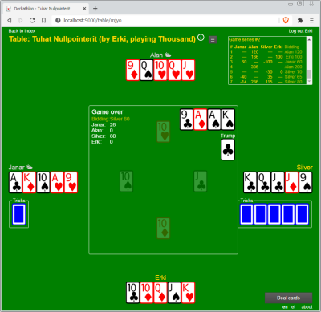

Deckathlon
A card game website engine.
This project is maintained by suurjaak
Games
Thousand
A trick-taking game for 3-4 players, with a bidding phase and a playing phase. Played with a deck of 24 cards, from nines to aces. The goal is to be the first player who reaches 1000 points.
Very engaging, highly popular in Eastern Europe. Can last for hours,
rarely less than one hour.

{kind=link}
Bidding
Deck is dealt out to players (7 cards to each if 3 players, 6 cards if 4 players), with the remainder going to talon face-down (3 cards if 3 players, 4 cards if 4 players). Players clockwise start placing their bids based on their hand: how many points will they make if they get the talon. Minimum bet is 60 points, default maximum is 120 points, or higher if player has trump cards in hand.
Bidding is not mandatory, player can pass. Passing during bidding is final - player can bid no more.
If all players pass without bidding, deck is re-dealt.
If a player has at least 3 nines in their hand, they can demand a re-deal on their first bid.
Blind
A player can bid blind, without looking at their hand. If they succeed in making that many points in game, they will get double the points. If they fail, they will get double the minus points. The maximum blind bet is 120 points.
Selling
If player who won the talon, sees the talon cards and thinks they will not succeed in making the points they bid, they can sell the talon. Talon cards go back on table, face-up this time, and players can continue bidding for the talon, starting with player next to the seller. Players who passed the first time can also participate. The selling player can also participate if somebody overbids their initial number.
If another player buys the talon, the seller gets no penalty. If nobody wants to buy the talon, the seller simply continues as they were, with the talon back in their hand.
Talon cannot be re-sold.
Distributing
Once a player has won the bidding, they receive the talon cards into their hand. They now need to give one freely chosen card from their hand to each other player, so that all players have the same amount of cards.
When playing with real cards, the player who won the talon always needs to remember that they have to distribute cards to other players. If they forget and for instance play an ace as the typical first move, face up, then the next player can take that ace into their hand as a card distributed to them.
Playing
Player who won the talon, leads the first trick and plays a card. Each player clockwise needs to play one card in response, same suite if they have it, any suite otherwise. The player who played the top ranking card in the leading suite, wins the trick and can start the next trick.
Playing a card of another suite in response loses the trick automatically, regardless of the card level (e.g. ace of spades does not beat a leading nine of hearts). Unless player plays a trump card: trump suite takes precedence over leading suite.
Card ranking is: ace as highest, ten, king, queen, jack, nine as lowest.
Only the last trick taken can be looked at afterwards, while game is underway.
Crawling
If the bidding player has no aces in hand, they can crawl on their first move: play a card face-down. Every other player plays their card face down as well, trick is still won by whoever played the top card in context of the first card.
Trump
If player leading the trick has taken at least one trick already, has at least three cards in hand, and has the king and queen of one suite in hand, they can make a trump: play one of the two cards and declare "trump". From that moment on, this suite trumps other suites.
Multiple trumps can be made during one game, next trump overrides the previous one.
Wheels
Additionally, if player leading the trick has the ace and ten of the current trump suite in hand (regardless of who made the trump), they can make wheels: play one of the two cards and declare "wheels". This will give them an additional 120 points.
Points
When all hands have been played, players tally up their points. Each trick taken gives them points from the cards in trick:
- ace: 11 points
- ten: 10 points
- king: 4 points
- queen: 3 points
- jack: 2 points
- nine: 0 points
The total tally from all cards is 120 points.
Each trump that a player makes gives them points according to the suite:
- clubs: 100 points
- spades: 80 points
- hearts: 60 points
- diamonds: 40 points
Wheels give player 120 points.
The player who won the talon, gets the exact amount bid if they succeed in making at least that many points. Making more does not give them more points. If the player fails at making as many points they bid, they will get minus the amount.
Other players will get as many points as their tricks and trumps etc give them.
If a player's point score has not changed for three games in a row, they will lose 100 points. Points can go below zero without limit.
While a player has a score of 900 points or higher, they can only receive more points if they bid and succeed in meeting their bid; they will get no points otherwise, regardless of how many tricks and trumps they take and make.
Arschloch
A game for 3-7 players, with winners and losers exchanging cards in consecutive games. Played with a full deck of 55 cards, all cards from twos to aces to jokers. In each game set, the goal is to empty own hand first; player finishing first is the winner and player finishing last the loser.
4-5 players makes for optimum gameplay.
Simple rules, highly addictive and engaging. Game series can last for hours,
or be had as a quick entertainment during a break.

Known by many other names: Asshole, Capitalism, President, Scum.
Playing
Entire deck is dealt out to all players (inevitably unevenly, unless there are exactly 5 players). In the first game in series, the player next to dealer leads the first trick, in following games the loser of the previous game leads the first trick.
Player leads a trick by playing a single or pair or triple or quadruple of a kind, e.g. 3 nines. Next players clockwise need to play their cards similarly all of one level, at least the same amount of cards, at least the same level. Suites are irrelevant. Player can pass; once passed, they can play no more during this trick.
If all players have passed except the one who played last, the trick is discarded and the last player can lead the next trick.
If all cards of one level meet in one trick (four of a kind or three jokers), the trick is discarded and the last player can lead the next trick.
Card ranking is: joker as highest, two, ace, king, queen, jack, ten, nine, .., four, three as lowest.
Only the last trick discarded can be looked at afterwards, while game is underway.
Exchanging
In consecutive games, the high and low ranking players of the previous game exchange cards among themselves, with low ranks needing to give their top cards and high ranks able to give any cards they choose. First and last player exchange 3 cards, further ranks exchange one card less per step. With at least 4 players, second best and second last exchange 2 cards. With at least 6 players, third best and third last exchange 1 card.
With an odd number players, the player at exact middle rank exchanges with no one.
When playing with real cards, the loser needs to deal.
Comment
As such, the top-ranking players continue to dominate following games, since they can not only give away low cards, but focus on getting rid of singles - in addition to receiving high cards back. Oftentimes the first half of the game is the top ranks fighting each other until they finish, as the losing players simply don't have as many high cards and multiples to play.
The only advantages for the losing player are: they can lead the first trick, and depending on the number of players they tend to get one card less.
Who exactly is the Arschloch here - the winner or the loser - is matter of debate.
Five Sheets
A simple game for 2-8 players, with players needing to kill the previous
card and play a card for the next player to kill. Played with a deck of 52
cards, from twos to aces. The goal is to empty own hand first; player finishing
first is the winner and player finishing last the loser.

Playing
Each player is dealt 5 cards, the remainder going to talon face-down, with one card below talon face-up as the trump, and one card in table stack face-up as the lead.
Player next to the dealer leads by playing a card to stack that kills the last card in stack, and follows it with another card for the next player to kill. A card can be killed by a higher card in same suite, or a card in trump suite. Trump can be played even if player has higher cards in same suite.
After making their move, player refills their hand by taking new cards from talon until they have 5 in hand. The face-up trump card below talon gets taken up last.
If player cannot or chooses not to kill the last card in stack, they need to retreat by taking up to 5 cards from stack into hand. If stack gets emptied during a retreat, a new card is played from talon to stack. If both stack and talon are empty, the next player only needs to play a single card.
If player has a single card in hand, they do not need to play the follow card.
Card ranking is: ace as highest, king, queen, jack, ten, .., three, two as lowest.